Продукт БАЗ · Дослідження
Конкурентний аналіз, бенчмарк ключових механік і продуктові висновки — зібрано з живого проходження продуктів (Playwright), UX-статей і офіційної документації.
01
Три групи, макс. 5 у кожній: хто вже займає цю нішу в Україні, хто вирішує ту саму задачу інакше, і на кого рівнятись у категорії загалом.
| Назва | Тип | Чому в цій групі | Що вивчити |
|---|---|---|---|
| GuessSong.app (+ Music Quizly, Spotiguess) | веб-застосунок | Найближча форма до БАЗ: чужий плейліст → фрагмент → компанія вигукує відповідь. Доступний українцям без локалізації. | Немає окремих баззерів на телефоні — хост вирішує на слух, хто перший. Перевірити, чи мережевий баззер взагалі потрібен у MVP. |
| Music Quiz, ArtMuz'Company (Київ) | жива послуга (діджей+ведучий) | Той самий ринок і оказія — компанія вгадує музику на заході, просто без застосунку. | Структура сценарію вечора, прайсинг — орієнтир цінності "музичного вечора". |
| WebQuiz.net, розділ "Музика" | укр. онлайн-сервіс вікторин | Україномовний інтерфейс, той самий JTBD "вгадай виконавця/трек". | Чи є груповий режим, чи виключно соло — сигнал звички ринку. |
| PubQuiz Kyiv | офлайн бар-вікторини | Та сама аудиторія і суботньо-вечірня оказія, хоч і не music-specific. | Темп раунду й формування команд у живому форматі. |
| Hitster (продається в Україні) | настільна гра + застосунок | Активно купується для вечірок — реальний конкурент за час/бюджет компанії. | QR у власному Spotify замість хостингу аудіо — обхід ліцензійних проблем. |
| Назва | Тип | Чому в цій групі | Що вивчити |
|---|---|---|---|
| SongPop | мобільний застосунок | 10+ років ринку, той самий core loop, але власний каталог, не чужий плейліст. | Retention-механіки (Marathon Mode, річний recap). |
| Kahoot!, музичні шаблони | quiz-платформа | Та сама device-топологія (екран+пульт), але універсальний інструмент, не music-first. | Join-flow: код кімнати без реєстрації — архітектура host/player view. |
| «Вгадай мелодію» (Sweet.tv, 2026) | телешоу | Та сама культурна метафора, але продукт для глядачів, не гравців. | Чи з'явиться second-screen застосунок — сигнал попиту в Україні. |
| Heardle (закритий 2023) + клони | соло-вебгра (Wordle-формат) | Той самий JTBD, асинхронна соло-гра без компанії. | Закрився через залежність від ліцензованих кліпів — див. "Головний інсайт". |
| Deezer "Музичний квіз" | фіча стрімінгу | Той самий JTBD, фіча для утримання підписників. | Великі стрімінги можуть додати власну guess-фічу — закладати незалежність. |
| Назва | Тип | Чому в цій групі | Що вивчити |
|---|---|---|---|
| Hitster (30+ країн) | настільна гра-франшиза | Категорієутворюючий продукт для емоції "стоп, це твоє?" — глобальний масштаб без застосунку. | Проста фізична механіка перемогла складніші цифрові аналоги — урок мінімалізму. |
| Spotify Jam / Blend | нативна фіча стрімінгу | Еталон "шерінгу музики" — чужий смак як спільний продукт-момент. | Onboarding друзів у спільну сесію за секунди. |
| Kahoot! | edtech/party quiz, мільярди сесій | Еталон тієї самої device-топології, що й БАЗ. | Синхронізація при десятках одночасних відповідей на слабкому Wi-Fi. |
| Turntable.fm → JQBX (обидва закриті) | синхронні кімнати прослуховування | Історичний еталон — і кейс поганого утримання engagement. | Чому обидва зникли — пастки для довгострокового виходу за межі "один вечір". |
02
Живе проходження (Playwright) семи продуктів за шістьма осями, і окремий глибокий розріз одного виміру — тягаря хоста — ще на п'яти.
[?] = ключовий екран за логіном/оплатою — оцінка на джерелах, не на живому проходженні
| Продукт | Аудиторія | Основа продукту | Ключовий механізм | Довіра | Монетизація |
|---|---|---|---|---|---|
| GuessSong.app | Будь-хто з посиланням на плейліст, глобально, без реєстрації | Open-source, спільна квота Spotify API | Плейліст → кліп 15с → вигук+тап АБО per-player Buzzer Mode; є Mixed Playlist Mode з бонусом за вгадування власника | [?] Публічний банер вичерпання квоти в реальному часі | Немає — безкоштовний, "run your own copy" |
| WebQuiz.net | Україномовні соло-гравці | Фіксована редакційна бібліотека | 20 питань, 15с кліп, множинний вибір, лайфлайни | Рейтинг 👍100% + лічильник проходжень | [?] "Coins" з попереднього огляду не підтвердились повторно |
| SongPop | Масовий мобільний гравець | Власний ліцензований каталог 100 000+ кліпів | Дуель/марафон, обмежений час на відповідь | 3.2★/24.7K відгуків (⅓ — 1★); офіційний сайт запаркований на продаж | Реклама + підписка + gems $1.99–$99.99 |
| Kahoot! | Від шкіл до корпоративів | Платформа-конструктор квізів | PIN без логіну для гравців; публічний Discover без реєстрації | Величезний освітній бренд, мільярди сесій | Хост платить One Max €19 / Ultra €35 / топ €39 на міс |
| Heardle | Соло-гравці, Wordle-хвиля 2022 | Був окремий сайт, куплений Spotify | Прогресивно довші фрагменти (1→16с), 1 спроба/день | Мертвий: heardle.app веде напряму на open.spotify.com | Не було; закритий через брак приросту прослуховувань |
| Hitster | Компанії на вечірках, 30+ країн | Фізичні картки + застосунок-компаньйон | Timeline-механіка + інтерактивний плеєр-віджет на маркетинг-сайті | 4.9★/3.4K в App Store, розробник Jumbo | Одноразова покупка + застосунок підштовхує до Spotify Premium |
| Spotify Jam/Blend | Наявні Spotify-користувачі-друзі | Нативна фіча всередині Spotify | Jam: до 32 людей керують плейлистом; Blend: авто-плейліст, до 10 друзів | [?] Недоступно без логіну+Premium — оцінка на офіційній довідці | Непряма — утримання Premium |
| Критерій | WebQuiz.net | Kahoot! | GuessSong.app | Jackbox Party Pack | Heads Up! |
|---|---|---|---|---|---|
| Швидкість старту | 1 | 3 | 5 | 4 | 5 |
| Contentprep заздалегідь | 5 | 3 | 2 | 5 | 5 |
| Тех-збої/квота на хості | — | 4 | 2 | 4 | 5 |
| Верифікація відповідей | 5 | 5 | 2 | 3 | 1 |
| Керування учасниками | — | 5 | 2 | 4 | 5 |
| Делегування ролі хоста | — | 1 | 2 | 2 | 5 |
| Когнітивне навантаження | — | 3 | 2 | 4 | 1 / 5* |
| Відновлення після помилки | — | 2 | 3 | 3 | 5 |
— = немає живого групового режиму (WebQuiz.net). * Heads Up! — 1 для того, хто тримає телефон, 5 для решти компанії.
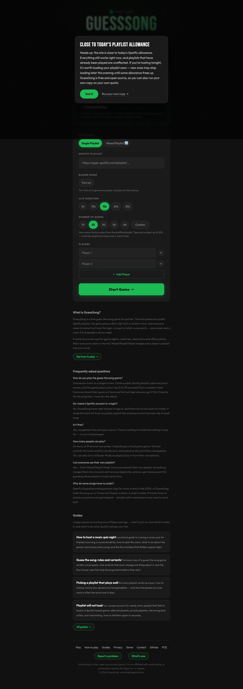
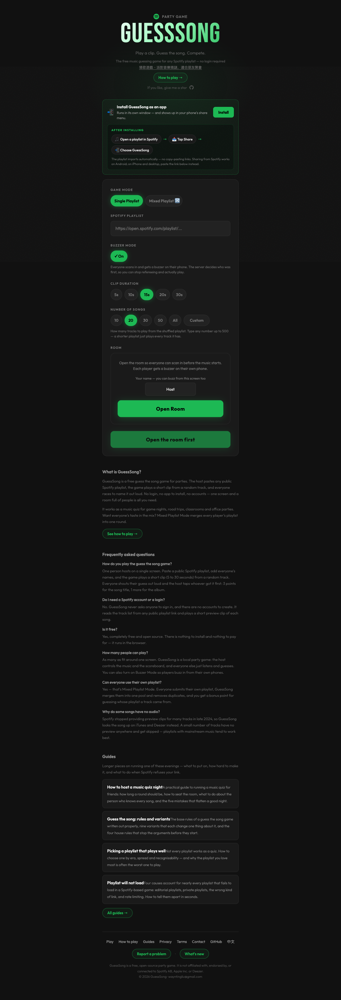
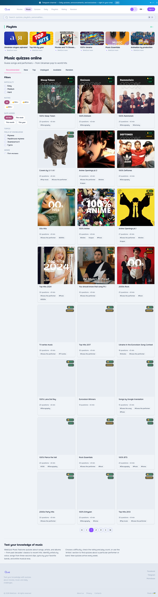
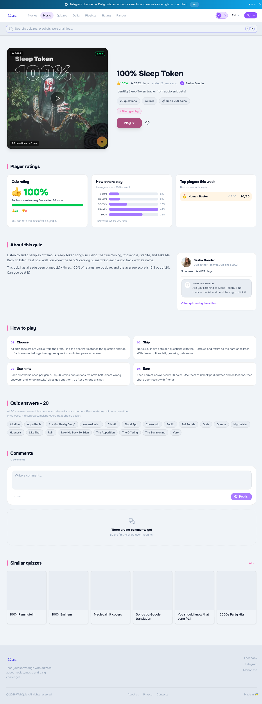
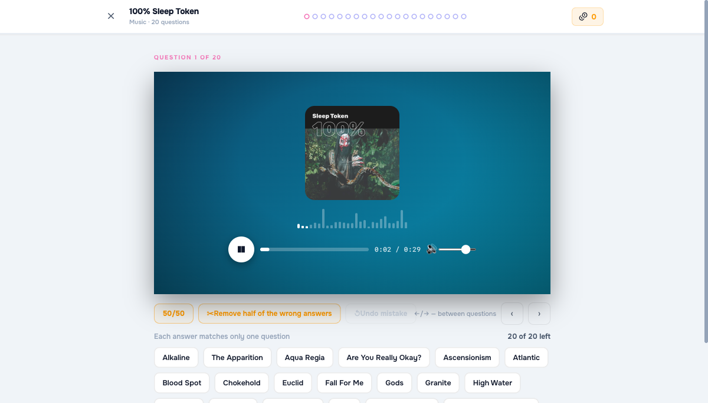
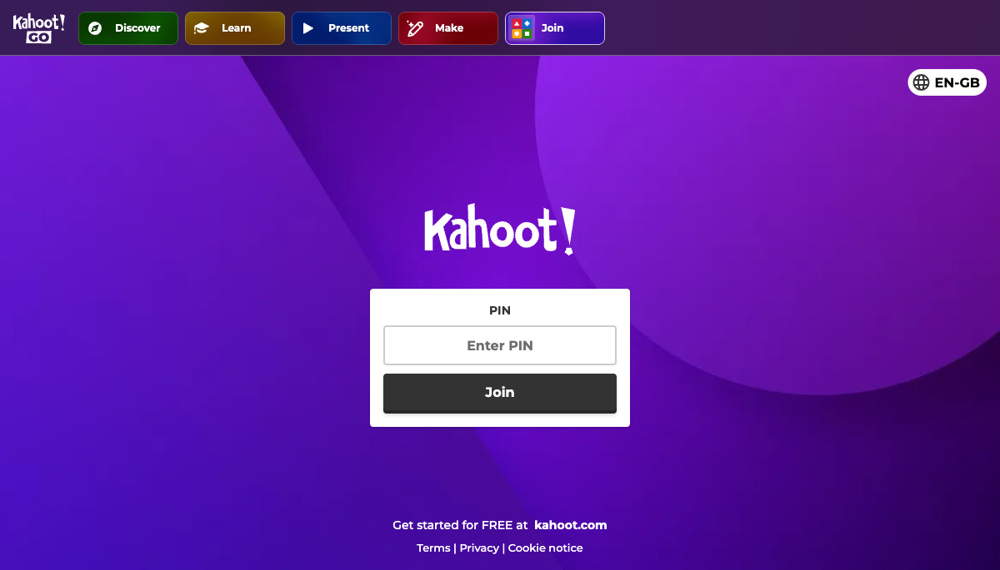
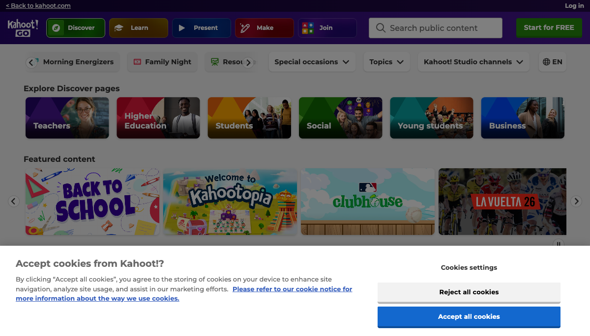
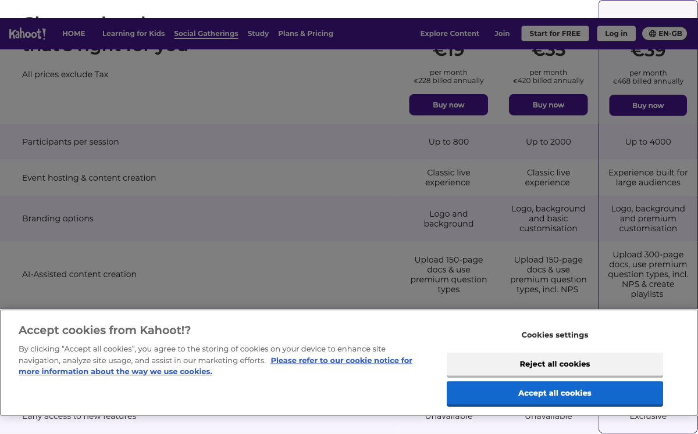
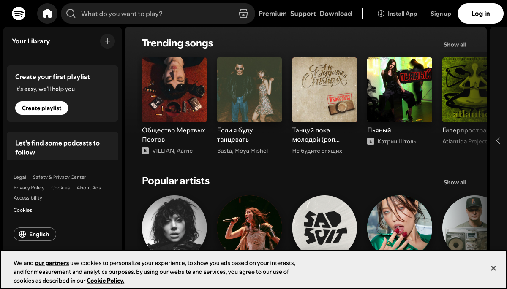
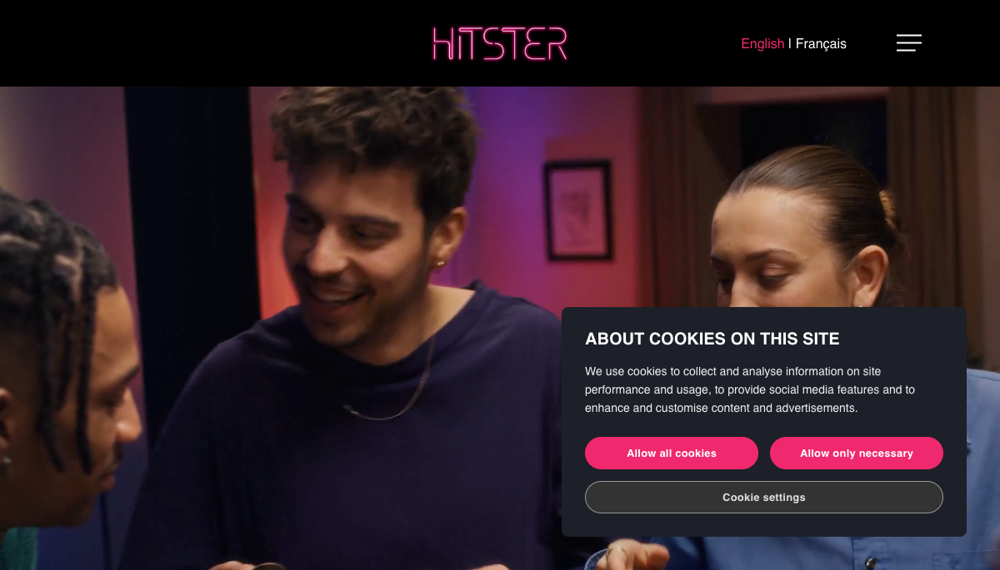
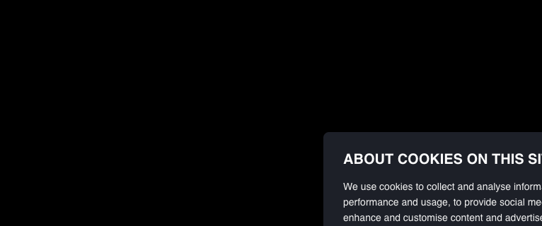
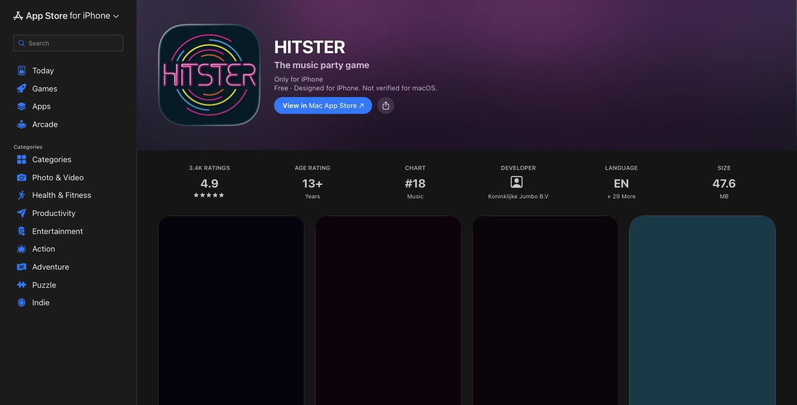
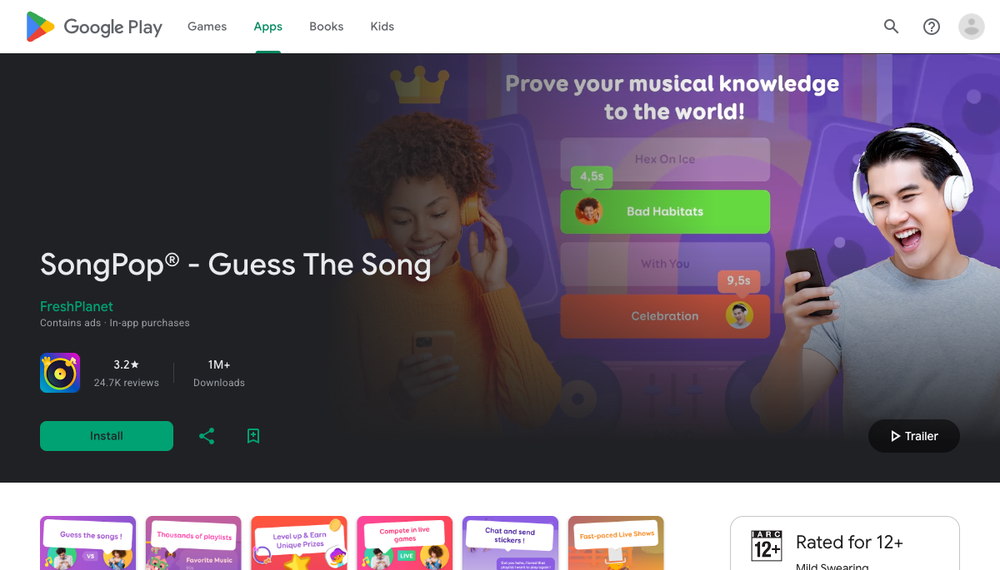
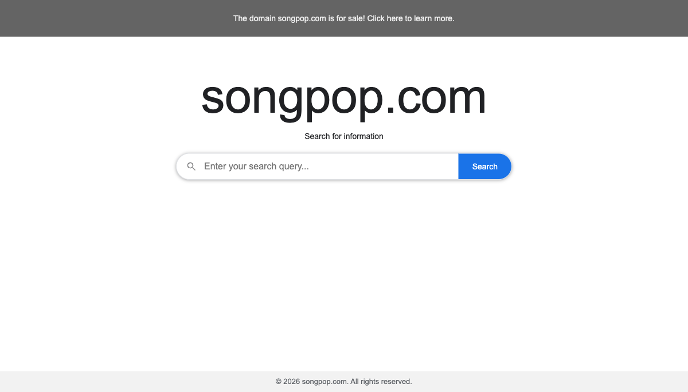
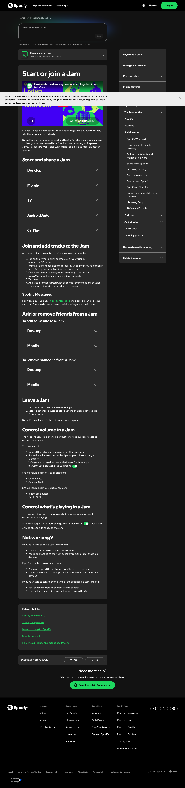
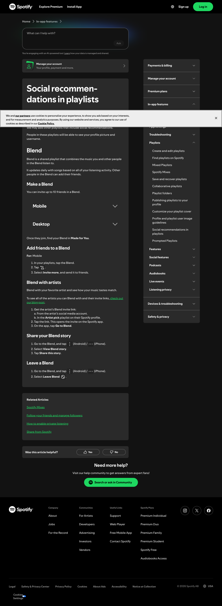
03
Що об'єднує всі сім продуктів — і де вони справді розходяться так, що це впливає на рішення БАЗ.
04
Що з цього всього напряму впливає на рішення продукту — головний інсайт, відкриті питання і конкретні механіки для MVP.
Головний інсайт
Незалежні "вгадай пісню"-продукти масово вмирають від ліцензійних проблем з аудіо (Heardle і майже всі його клони). Це підтверджує рішення грати через YouTube IFrame Player, а не хостити власні аудіокліпи, — не деталь стеку, а те, що визначає, чи проєкт узагалі виживе довгостроково.
Топ-3 механізми в MVP
1 механізм, що НЕ спрацює
Kahoot: хостинг за акаунтом + платні тіери. Найгірший результат на критерії "делегування ролі хоста" (1/5) — прямо суперечить амбіції "будь-яка незнайома компанія, онбординг з нуля". Обов'язкова реєстрація/оплата вб'є саму ідею ротації ведучого — ядро продукту БАЗ.